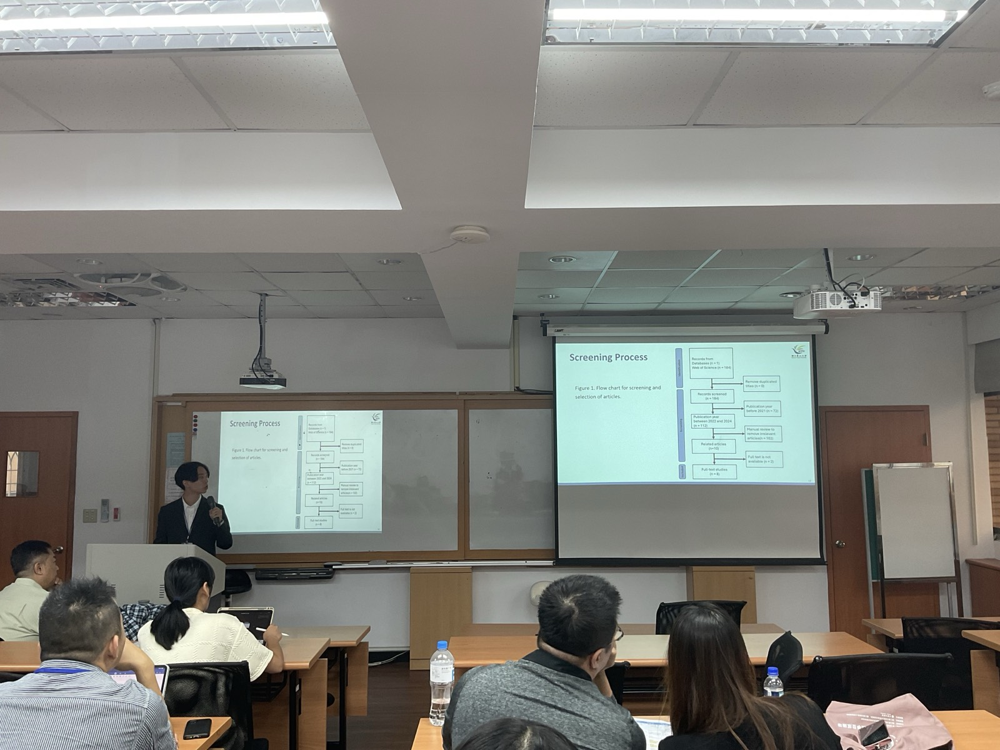

📄 IMP2024 簡介
IMP2024 第29屆資訊管理暨實務研討會由台北商業大學主辦，聚焦於智慧城市、人工智慧應用、大型語言模型等前沿議題。 本研究團隊投稿之研究主題為智慧城市中的大型語言模型代理人系統，並於 2024/11/21 發表並獲得參與證書。
🎖️ 參與證書

📸 研討會照片


IMP2024 第29屆資訊管理暨實務研討會由台北商業大學主辦，聚焦於智慧城市、人工智慧應用、大型語言模型等前沿議題。 本研究團隊投稿之研究主題為智慧城市中的大型語言模型代理人系統，並於 2024/11/21 發表並獲得參與證書。
